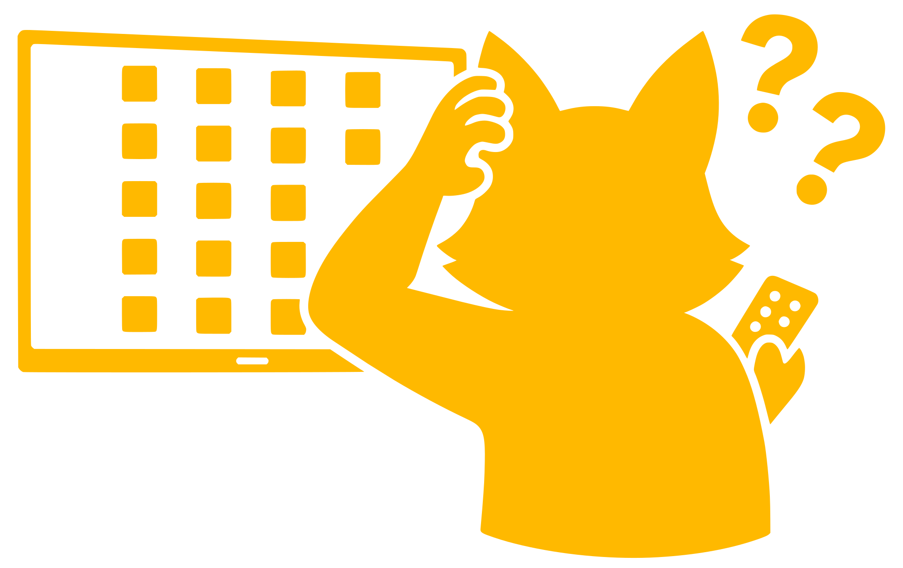

OnRegardeQuoi.com is a free, private, lightweight, and open-source web app for discovering movies and TV shows through their trailers.
It takes its name from the common French phrase "On regarde quoi ?", meaning "What are we watching?".
Feel free to visit the GitHub repository to learn more about the project.
Made with ❤ by micka from Paris
For power users, you can use tags to search for a specific type of movie or TV show. Combine them to refine your discovery:
Example: g:sci cr:nolan y:2014